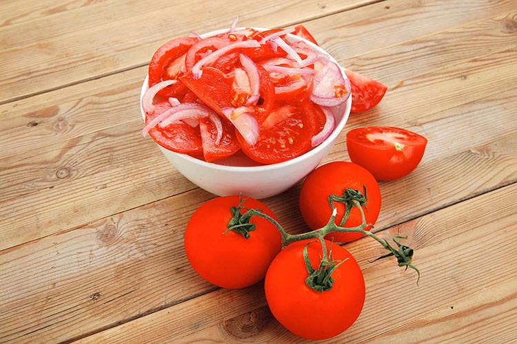

Ensalada de cebolla y tomate

Una ensalada humilde pero poderosa. El acompañante ideal para un buen pedazo de carne frita. Va genial junto a un base de limonada y papa salada.
Ingredientes
- Tomates
- Cebolla cabezona
- Sal
- Limón
Instrucciones
- Hacer rebanadas de cebolla y tomate
- Agregar a un plato
- Agregar la sal y el limón
- Revolver y servir